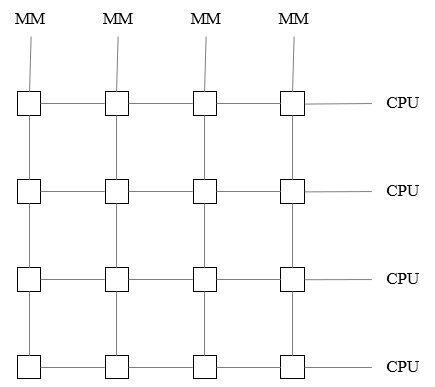

交换机
@Switch- 概述 Overview
- 交换机是工作在 OSI 模型第二层 - 数据链路层，所以也叫二层交换机 L2 Switch
- 多端口
每个端口都与一个主机或另外一个交换机直接相连
每个端口都是一个 独立 的冲突域 Collision Domain，用以隔离冲突，减少了数据包冲突的可能性
交换机通过内部的硬件交换矩阵，在通信的两个端口之间临时搭建的一条点对点逻辑信道；彼此互不影响
图中 MM 为 内存模块 Memory Module；方块代表交叉点 Crosspoint
- 多速率
- 全双工通信
- 具备缓存功能
- 信道利用率提高
共享式交换机已淘汰
如无特别说明，交换机都是指交换式集线器 - 以太网交换机

冲突域 Collision Domain
也叫碰撞域
共享信道网络，如Hub，整个集线器上的所有端口属于同一个冲突域
分类 Classification
- 按交换方式 Mode
- 存储转发 Store and Forward
接收/缓存完整的数据帧，校验（CRC）、过滤碎片，最后转发
转发是由专门的ASIC交换芯片实现
优点：提供差错校验和速率不一致的非对称交换
缺点：时延长
- 直通式 Cut-Through
不做缓存
不做校验，收到即转发，可能有坏帧
和存储转发的特点刚好相反
- 碎片过滤式 Fragment Free
融合了以上2种优势
转发前先检验数据帧的长度是否够64个字节；如果大于或等于就转发；如果不够，就作为碎片丢弃；（以太网帧 >= 64字节）
目前硬件的转发速度够快，基本可以忽略时延的影响
- 交换协议 Protocal
- 二层交换机
链路层交换
如无特别说明，默认都是指二层交换机
- 三层交换机
集成了路由功能
路由器默认都是三层
- 按交换结构 Structure
- 固定端口交换机
接入交换机一般都是固定端口的交换机
通常有24口、48口
24口：24个电（接电脑或终端或用户）的下行端口；还有4个光的上行端口
48口：48个电（接电脑或终端或用户）的下行端口；还有4个光的上行端口
- 可扩展端口交换机
- 按部署层次/架构 Deployment
- 三层架构：接入交换机 → 汇聚交换机 → 核心交换机 → 出口
- 核心交换机
通常是3层交换机 - 具备路由功能
S3560
- 汇聚交换机
楼栋/部门汇聚，一栋楼放1-2台
两层架构：接入交换机 → 汇聚交换机 → 出口
S3560
- 接入交换机
接用户，每个楼层放3-5台
单层架构：接入交换机 → 出口
S2960

规格 Specification
- 端口类型 Port Type
- 电口 Electrical Ports
RJ45
10/100 Mbps (Fast Ethernet)
1 Gbps (Gigabit Ethernet)
10 Gbps (10GBASE-T)
- 光口 Optical Ports
SFP (Small Form-factor Pluggable): 千兆光模块，可热插拔，支持多种传输距离和介质
SFP+ 万兆口
SFP28: 支持 25 Gbps 速率
- 传输模式 Transmission Mode
- 全双工
更常见
- 半双工
较少应用
- 交换容量 Switching Capacity
- 交换机背板总线所能提供的最大数据吞吐能力，单位通常是 Gbps 或 Tbps
- 全双工通信，每个端口可以同时收发
- MAC 地址数
- 交换机 MAC 地址表中可以存储最大的 MAC 地址的数量
- Vlan 表项
- 交换机最大支持的 Vlan 的数量
- 根据 IEEE 802.1Q 标准，VLAN ID 是 12 位，因此理论上最多支持的 Vlan 个数为
- 212
- = 22210
- =4 × 1024 （俗称 4K）
- = 4096 （个）
- 其中 VLAN 0 和 VLAN 4095 被保留；VLAN 1 为默认 VLAN，所以实际可用的 VLAN ID 范围是 1-4094
- 包转发率 Packet Forwarding Rate
- 交换机每秒能够成功转发的数据包数量，单位是 pps (packets per second)
- 通常以最小帧长 64byte 来计算理论最大值
- 因为数据包越小，同样带宽下需要处理的包数量就越多，对交换机的处理压力就越大
- 包转发率 = 端口速率 / (前导码 + 帧长 + 帧间隙)
= 48 × 1G × 2 + 4 × 1G × 2
= 104Gbps
= 1Gbps / (7 + 1 + 64 + 12) byte
= 1Gbps / 84 byte
= 1Gbps / (84 × 8) bit
≈ 1488095 pps ≈ 1.488 Mpps
Summary & Homework
- Summary
- 碰撞域/冲突域
- 交换机的特点
- 交换机的分类
- 交换机的规格
- Homework
- 10个站都连接到一个 10Mbit/s 的以太网集线器
- 10个站都连接到一个 100Mbit/s 的以太网集线器
- 10个站都连接到一个 10Mbit/s 的以太网交换机
- 答：
- 答：
- 答：
- Reading
最大吞吐量 = 9台主机的吞吐量 + 2台服务器的吞吐量
= 900Mbit/s + 200Mbit/s
= 1100Mbit/s
如果把三台交换机换成集线器，由于集线器是总线型，同一集线器下同一时刻只能一台设备发送数据
每个系是一个碰撞域
所以图中9台主机其实只有三台在发送，吞吐量是300Mbit/s，两个服务器吞吐量是200Mbit/s
∴最大吞吐量是 300Mbit/s + 200Mbit/s = 500Mbit/s
整个系统是一个碰撞域
∴最大吞吐总量是 100Mbit/s